2 Writing/ Collaborative Writing Platforms
2.1 What is Overleaf?
Overleaf is an online LaTeX editor that allows users to create, edit, and collaborate on LaTeX documents in a web-based environment.
2.2 LaTeX Documents
LaTeX is a typesetting system commonly used for the production of scientific and mathematical documents due to its robust handling of complex formatting.
2.3 Advantages of Overleaf
1. Real-Time Collaboration
Multiple users can work on a document simultaneously, with changes visible in real-time.
2. Templates
Overleaf provides a variety of templates for different document types such as thesis, posters, presentations, etc., making it easier to get started.
3. Version Control
Integrated version control system tracks changes and allows users to revert to previous versions.
4. Rich Text Editing
Combines the power of LaTeX with a user-friendly rich text editor for easy formatting.
5. Accessibility
Access your documents from any device with an internet connection. Since it’s web-based, there’s no need to install LaTeX on your computer.
2.4 Setting up an Overleaf Account
- Go to https://www.overleaf.com/.
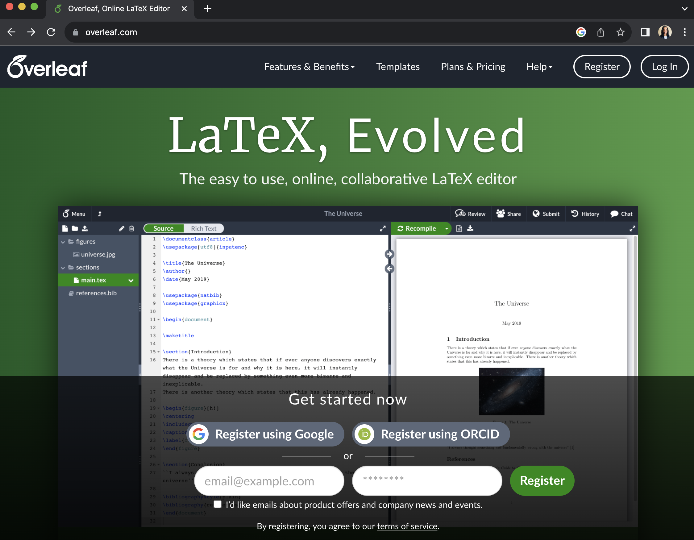
- Click on Register
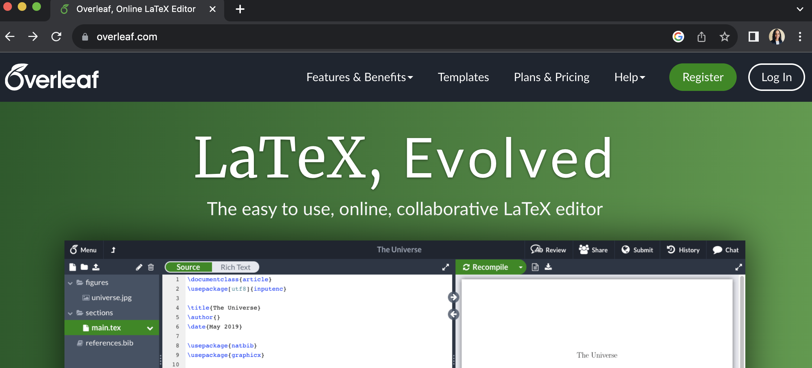
- Register Overleaf by entering your details. I registered using my email.
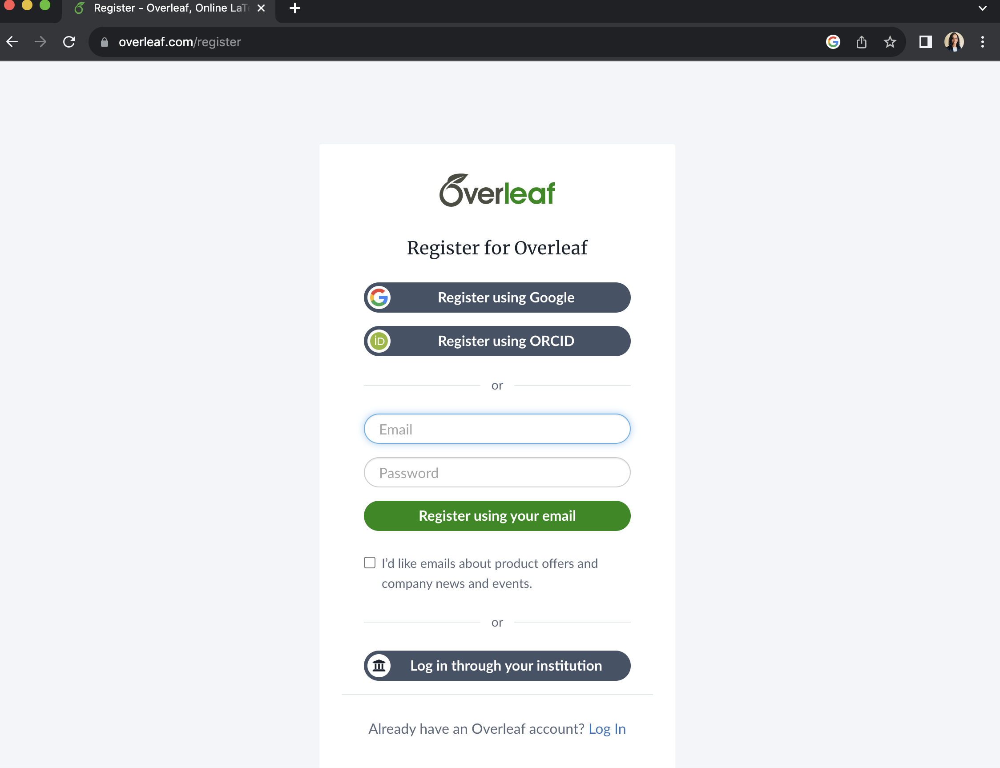
- Skip “Try Premium for free”
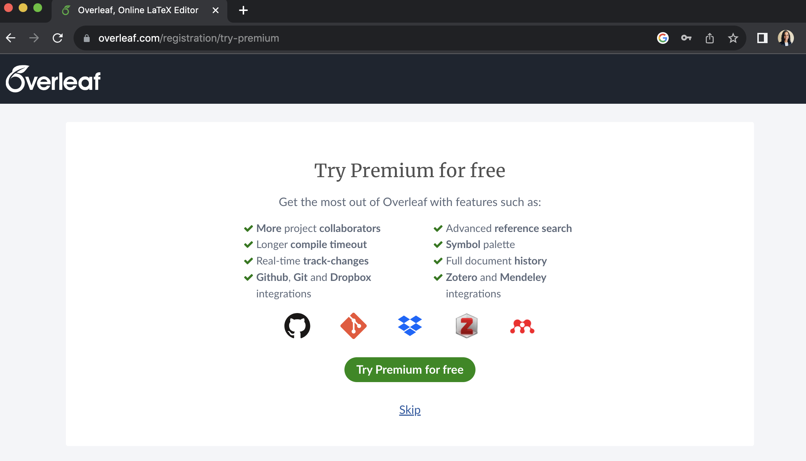
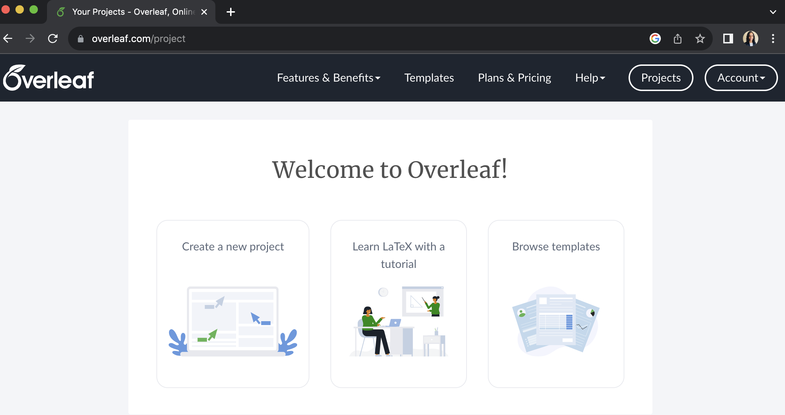
2.5 Create a new project
- Create a new project -> Blank Project
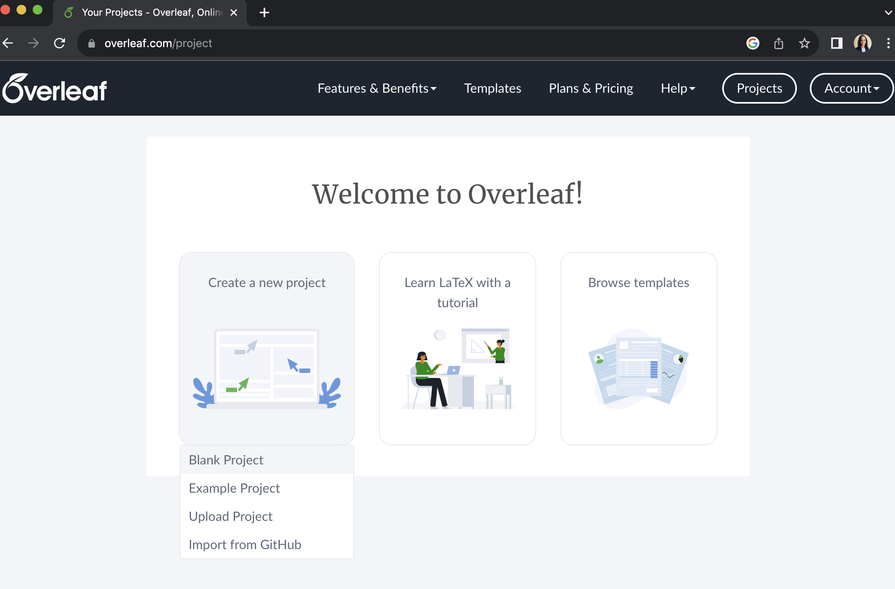
- Give a name to your project
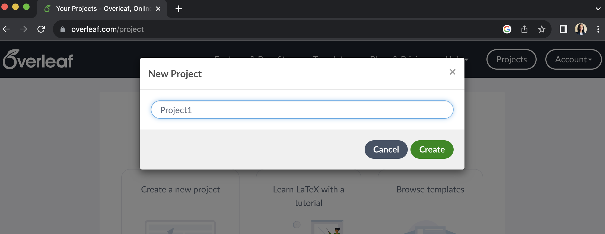 ## Your first overleaf document
- Template
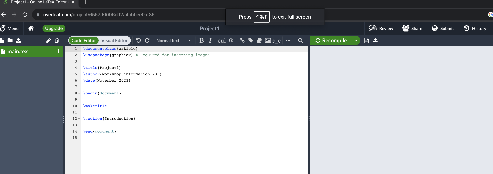
- Compile
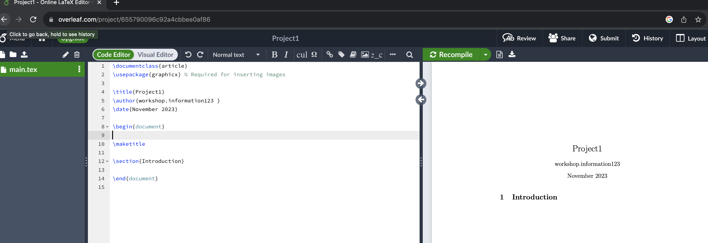
2.6 Text formatting
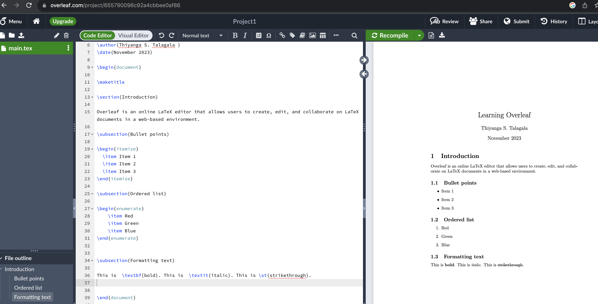
2.7 Working with images
- Upload an image
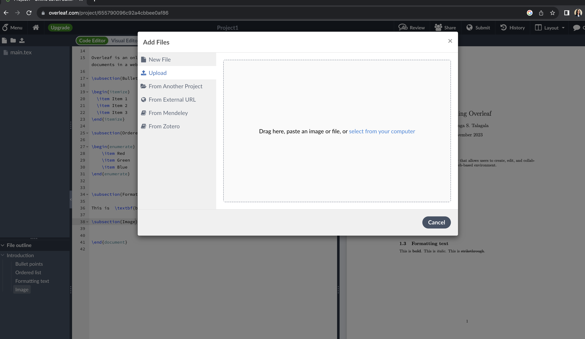
- Insert an image to the document
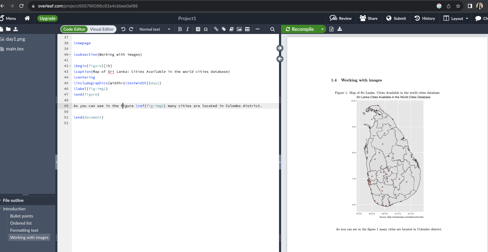
2.8 Mathematical Equations
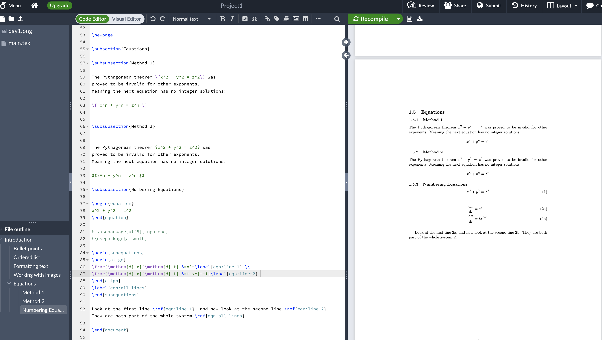